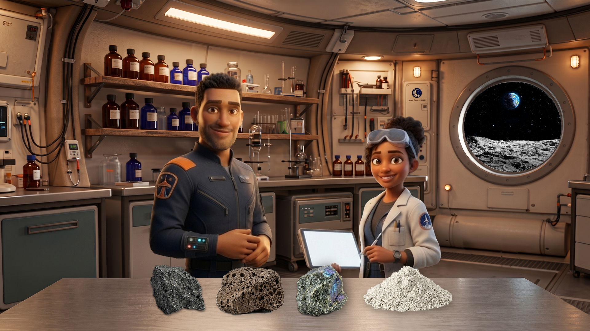
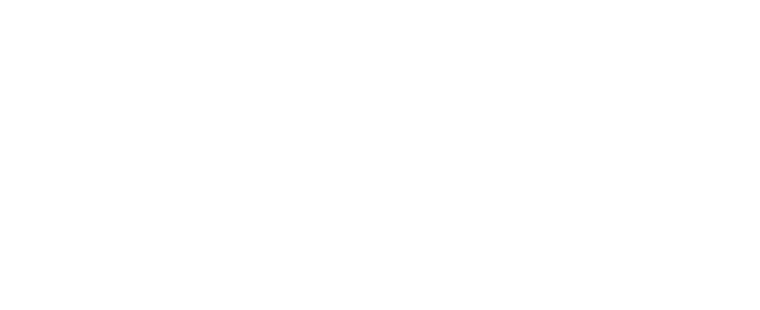
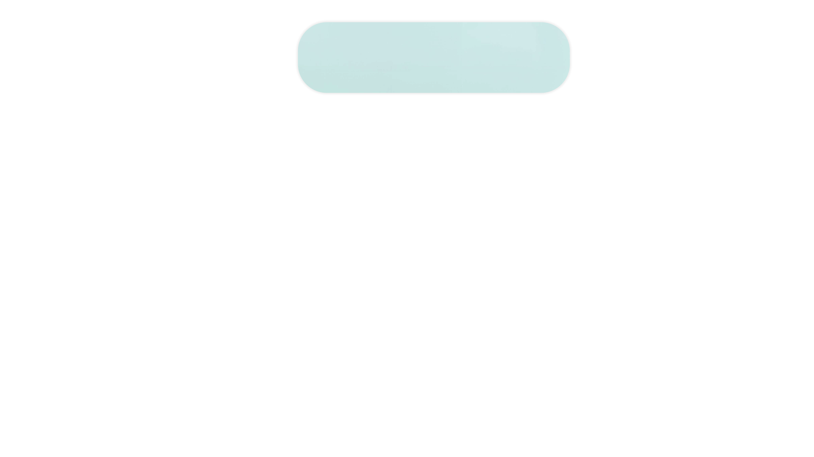
מבצע אריזה בירח - נפח

לחצו על כל דגימה כדי לקבל מידע.
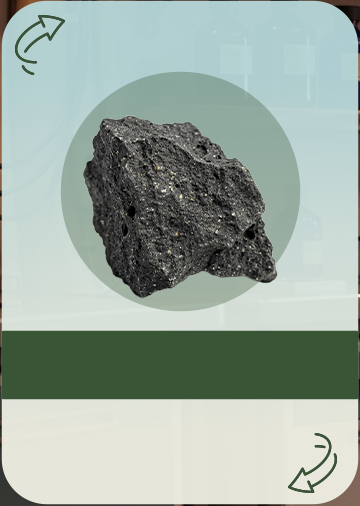
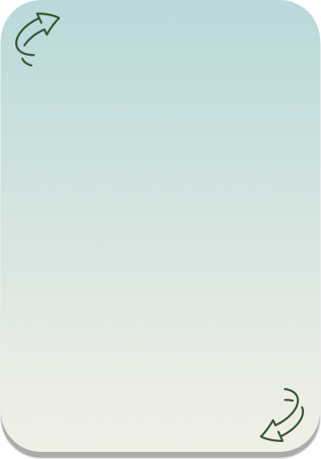
בָּזֶלֶת מָארֶה
סלע געשי כהה, עשיר בברזל ומגנזיום, שנוצר מלבה שהתקררה על פני הירח. ממנו עשויים האזורים הכהים שעל הירח.
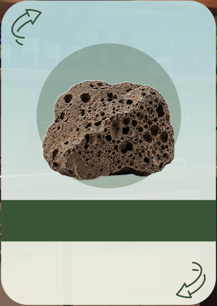
בָּזֶלֶת נַקְבּוּבִית
סלע בזלתי שיש בו חללים קטנים (״בועות״) שנוצרו כשגזים שהיו בתוך הלבה נלכדו בתוך הסלע בזמן התמצקות הלבה.
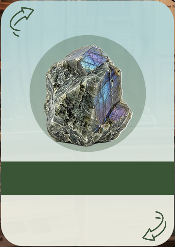
אָנוֹרְתוֹזִיט
סלע גבישי בהיר מאוד שנוצר בתקופה קדומה ושממנו בנויות רוב הרמות הגבוהות של הירח (האזורים הבהירים).

רֶגוֹלִית - אָבָק יְרֵחִי
השכבה העליונה של פני הירח, שמורכבת מאבק, גרגרי סלע ושברי אבנים קטנים שנוצרו במשך מיליארדי שנים מפגיעות של מטאוריטים.

לפני שניגש למכשירי המדידה, בואו נוודא שאנחנו מבינים אילו נתונים נרצה למדוד. נתחיל בנפח. נפח הוא המקום שגוף או חומר תופסים במרחב.
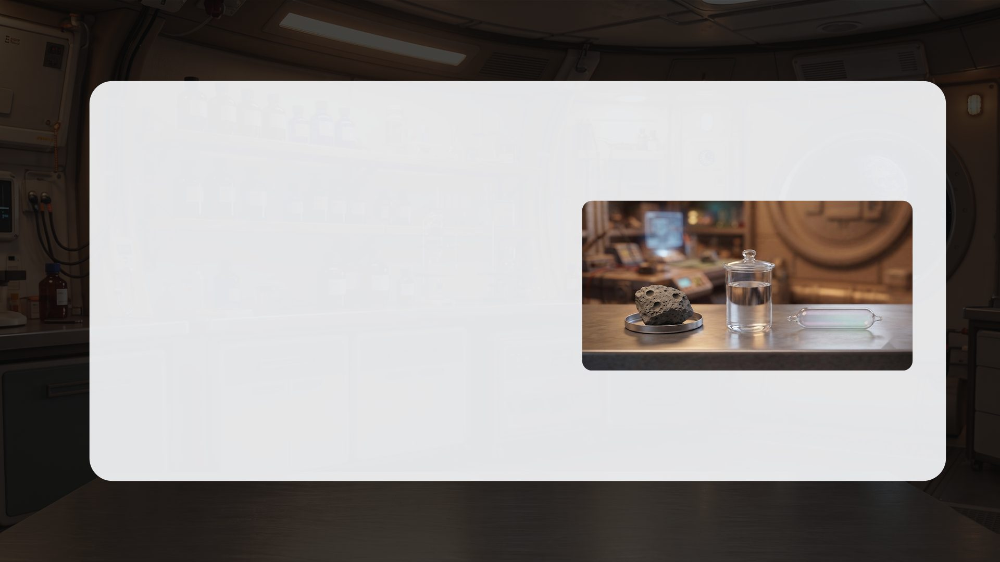
שאלה 1:
על השולחן מונחים שלושה כלים: צלחת שעליה מונח סלע, כלי זכוכית המכיל מים ושפורפרת המכילה גז מסביבת הירח.
איזה מהם תופס מקום במרחב?
סמנו את התשובה הנכונה.
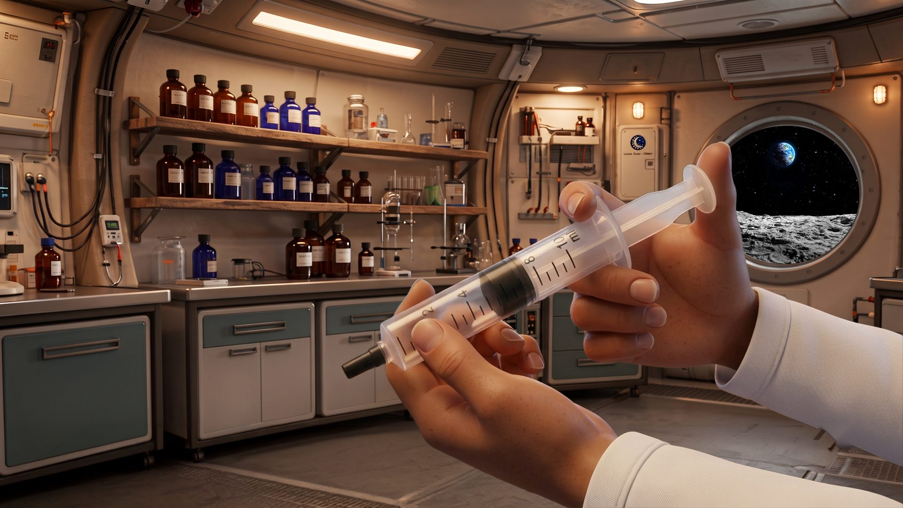
גם לגז יש נפח. הוא תופס מקום במרחב, גם אם איננו רואים אותו. המזרק אטום ומלא באוויר. כשנלחץ על הבוכנה לא נצליח לדחוף אותה עד הסוף בגלל התנגדות האוויר שבמזרק. כלומר, האוויר הכלוא בו תופס מקום.

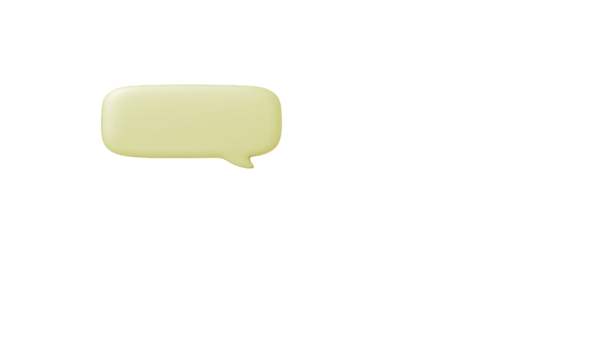
לדגימות הסלעים אין צורה הנדסית מוגדרת, לכן נשתמש בשיטת "דחיקת מים" כדי לחשב את נפחן.

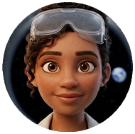
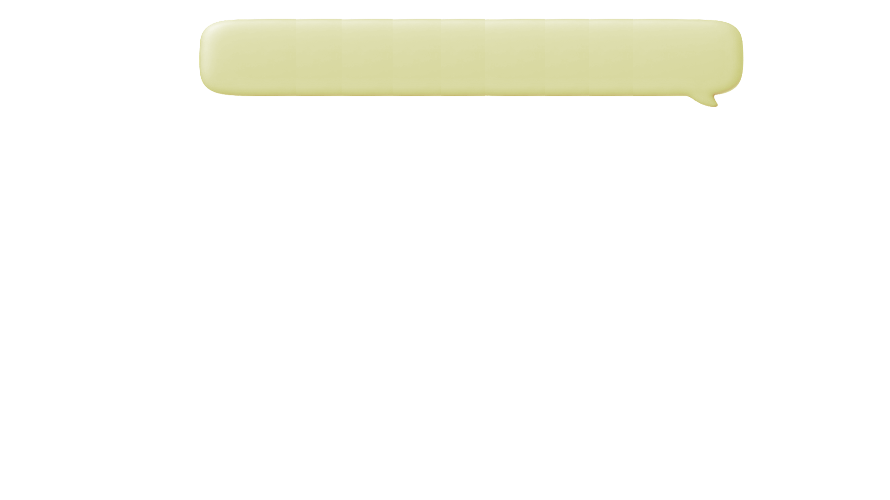
לפני הכנסת הסלע, נפח המים במשורה הוא 80 מ"ל. כשמכניסים את הסלע למים הוא תופס מקום, ולכן מפלס המים עולה. הנפח המשותף של המים והסלע יחד הגיע ל-110 מ"ל. ההפרש בין המפלסים הוא 30 מ"ל, וזהו בעצם הנפח של הסלע.
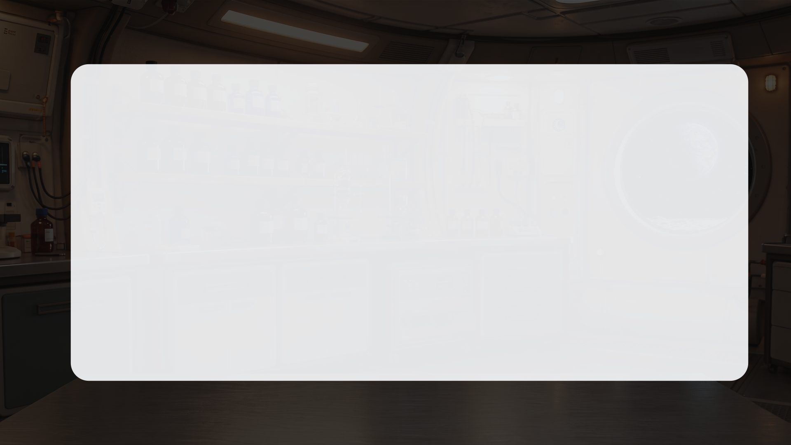
שאלה 2א:
עזרו לשירה וגל לסדר את שלבי תהליך מדידת הנפח של דגימת הבזלת הנקבובית.
גררו את הפעולות למקומן המתאים בטבלה:

שאלה 2ב:
במדע חשוב לבצע מדידות באופן מדויק ככל האפשר. הסבירו כיצד כל שלב בתהליך מדידת הנפח מסייע לשפר את דיוק תוצאת
המדידה. היעזרו ביישומון שממחיש מדידת נפח של גוף צף.
גררו את הנימוק המתאים לכל אחד מהשלבים:

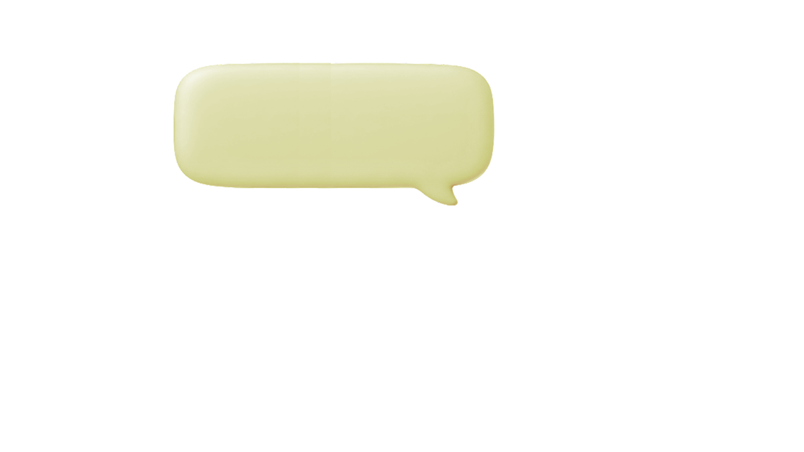
ביצעתי את המדידה בדיוק לפי השלבים שקבעתם. תחילה מדדתי את המשקולת לבדה – נפחה הוא 15 מ"ל. לאחר מכן קשרתי אליה את דגימת הסלע הצפה והשקעתי את שניהם יחד במים. הנפח המשותף של שניהם יחד הוא 50 מ"ל.
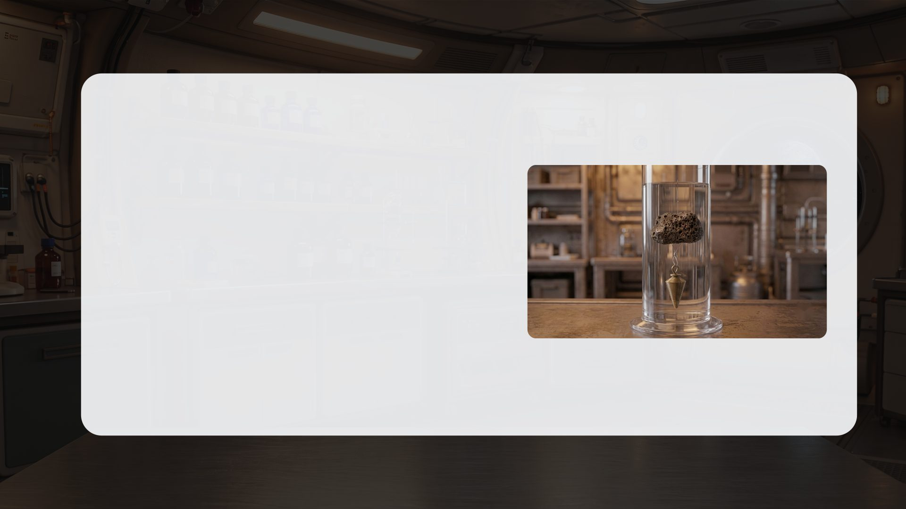
שאלה 3:
נפח המשקולת לבדה: 15 מ"ל. הנפח המשותף של המשקולת והדגימה: 50 מ"ל. עזרו לשירה לחשב מהו נפח דגימת הסלע הצפה בלבד.
סמנו את התשובה הנכונה:


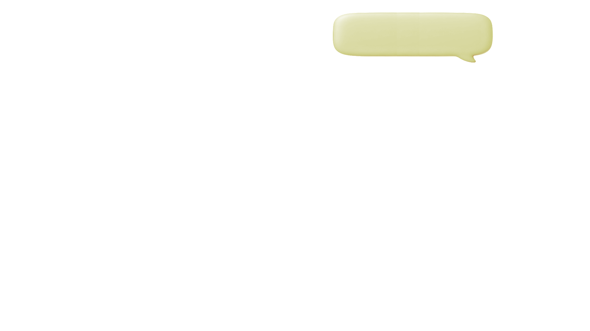
לבזלת הזו יש המון חללים פנימיים.
במקרה כזה, נבחין בין שני מושגים:


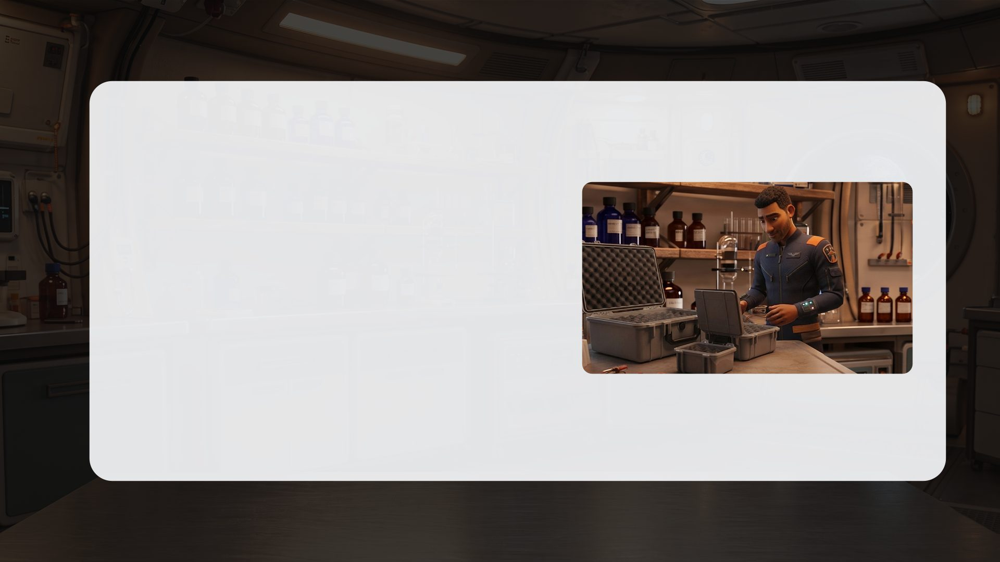
שאלה 4:
מדדנו את נפח הגוף של דגימת הבזלת הנקבובית ומצאנו שהוא 35 מ"ל.
נפח החומר הסלעי בלבד (ללא החללים) הוא 28 מ"ל.
באיזה נתון גל צריך להשתמש כדי לתכנן קופסה שתתאים לגודל הסלע?
סמנו את התשובה הנכונה:

שירה, ראיתי שחישבת ומצאת שנפח החללים בסלע הוא 7 מ"ל. אכתוב בדוח המדעי שבתוך הסלע כלוא גז מהירח בנפח של 7 מ"ל.
חכה רגע, גל. בוא נחשוב כמו מדענים. האם הנתון שלפיו נפח החללים בסלע שווה ל-7 מ"ל, מאפשר לנו לקבוע בוודאות כי בסלע כלוא גז מהירח?
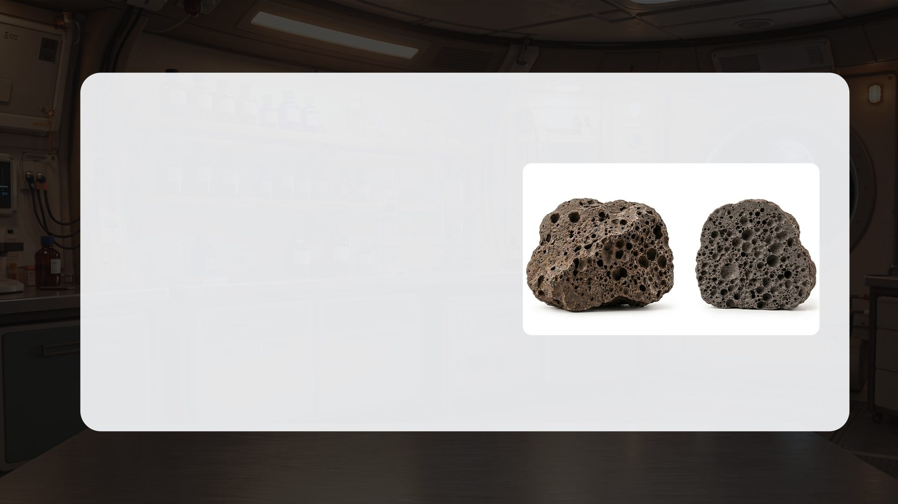

שאלה 5:
גל טוען שבתוך הסלע כלוא גז מהירח בנפח 7 מ"ל. האם הטענה של גל מבוססת מדעית על סמך הנתון הקיים?
סמנו את התשובה הנכונה:


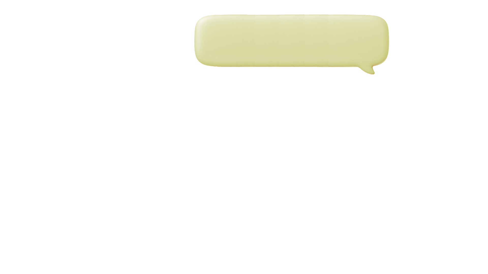
הגענו לדגימה האחרונה – הרֶגוֹלִית (אבק הירח).
החומר נשפך ומקבל את צורת הכלי ממש כמו מים.
לדעתי זהו נוזל, אפשר פשוט למזוג אותו למשורה ריקה
ולמדוד את נפחו.
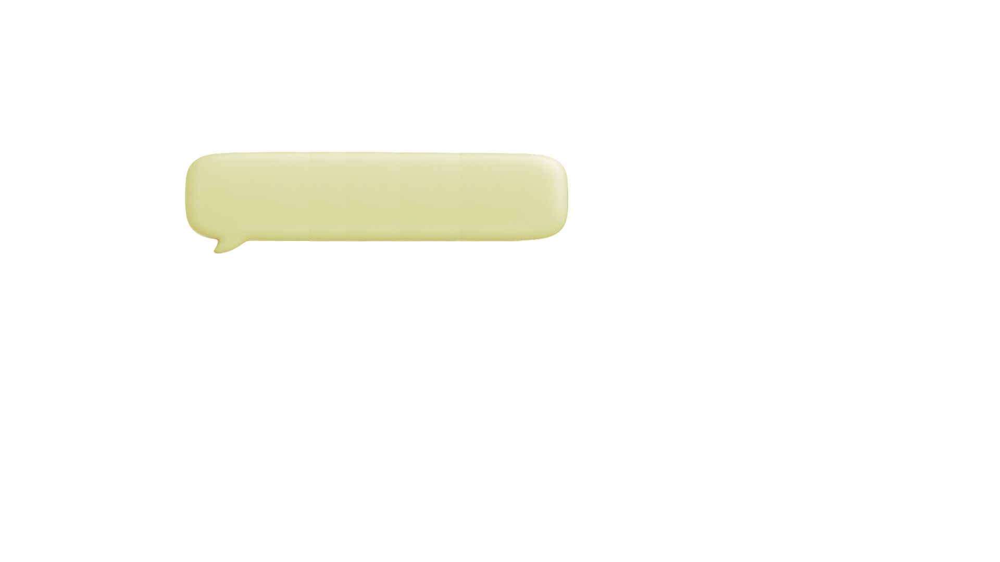
חכה רגע, גל. בוא נסתכל מקרוב.
כל גרגר אבק הוא למעשה פיסת סלע קטנה וקשיחה.
העובדה שהאבקה נשפכת לא הופכת אותה לנוזל.
מבט מבעד
למיקרוסקופ


שאלה 6:
עזרו לגל ושירה להחליט: מהו מצב הצבירה של אבקת הרגולית, וכיצד נמדוד
את נפחה. לפניכם מספר היגדים המתארים את הרגולית.
סמנו את כל ההיגדים הנכונים:
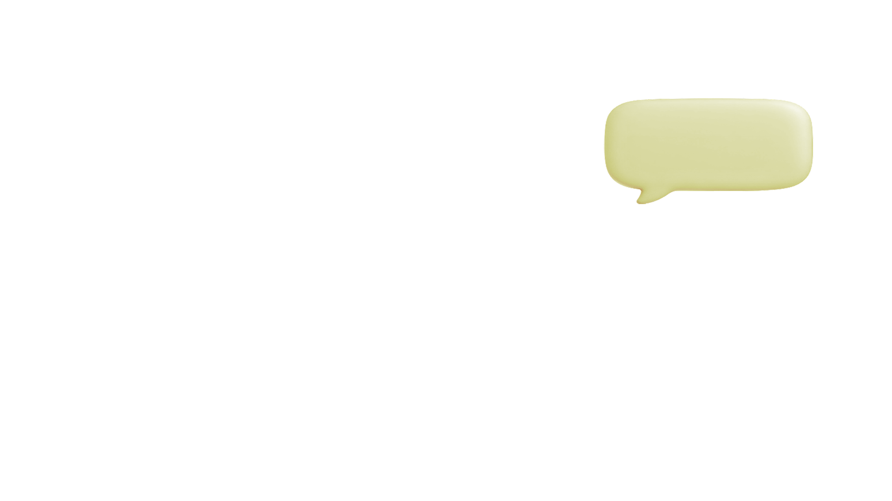
שירה, מצאתי את הבקבוק הזה,
אולי אוכל לעזור לך
במדידת הנפחים של הרגולית?
אני אשמח, אבל לפני כן נצטרך
לכייל את הבקבוק שמצאת.
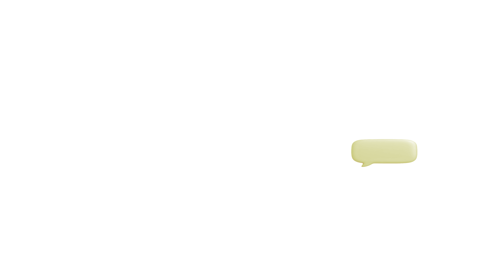
מה זה לכייל?

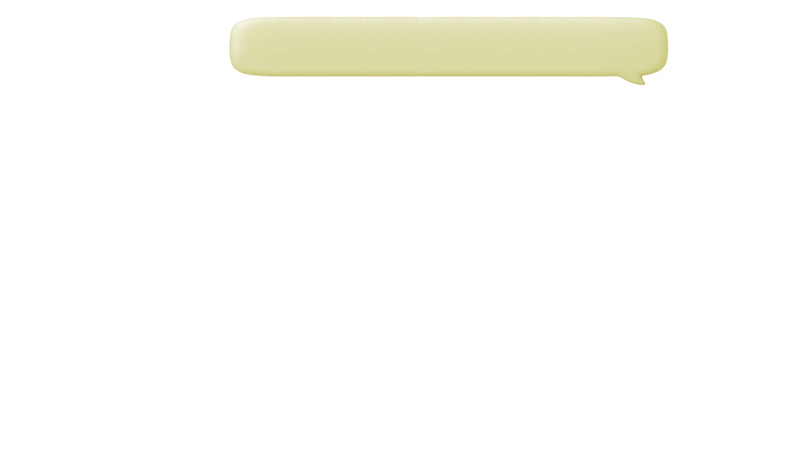
כיול הוא הפעולה של הפיכת כלי לכלי מדידה. כדי להפוך את הבקבוק שהבאת
לכלי מדידה נצטרך להוסיף לו שְׁנָתוֹת (קווים) שיסמנו את הנפח בתוך הכלי.
בקבוק קוני – ארלנמאייר:
כלי בעל צורה משתנה, רחב בבסיס ונעשה צר לכיוון הקצה.

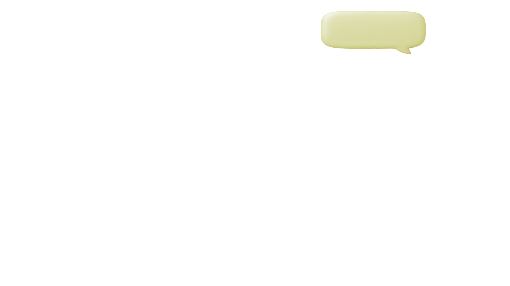
לחצו כדי לסמן שְׁנָתוֹת ולכייל את הארלנמאייר
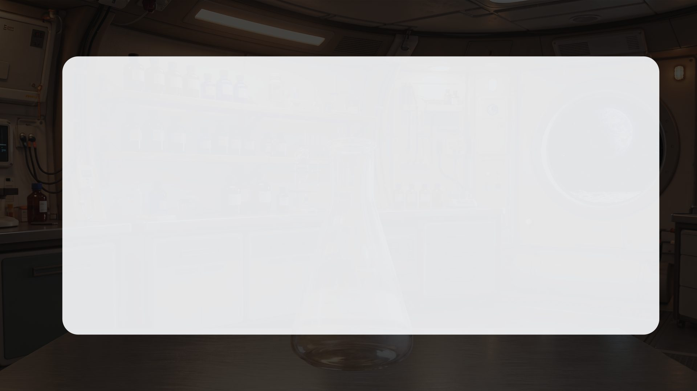
שאלה 7א:
הסבירו לגל כיצד עליו לסמן את השְׁנָתוֹת על הבקבוק שמצא. לפניכם שלבי תהליך הכיול של הבקבוק.
גררו כל שלב אל המקום הנכון:
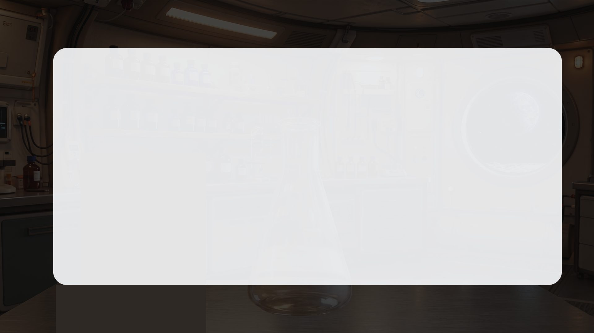
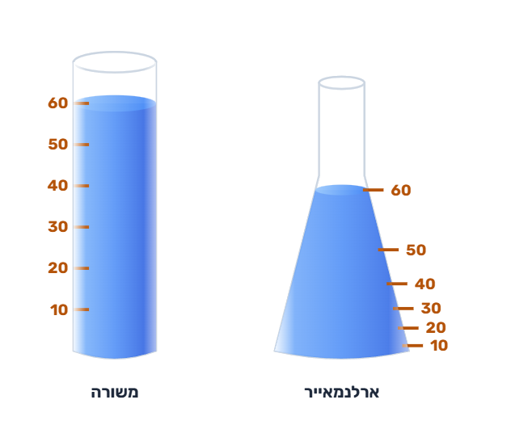
שאלה 7ב:
השלימו את החסר באופן הנכון:
אותו הנפח (למשל 10 מ"ל) יכנס בגבהים בכלים שונים. הכל לפי צורת הכלי.
הקו שמסמן 10 מ"ל במשורה הצרה יהיה קו שמסמן את אותם 10 מ"ל בבקבוק הרחב.
גודל הרווחים בין השְׁנָתוֹת משתנה אף הוא בהתאם לצורת הכלי – בכלי ההולך ונעשה צר הרווחים בין השְׁנָתוֹת .
ככל שעולים למעלה, לכיוון פתח הבקבוק, הרווחים .

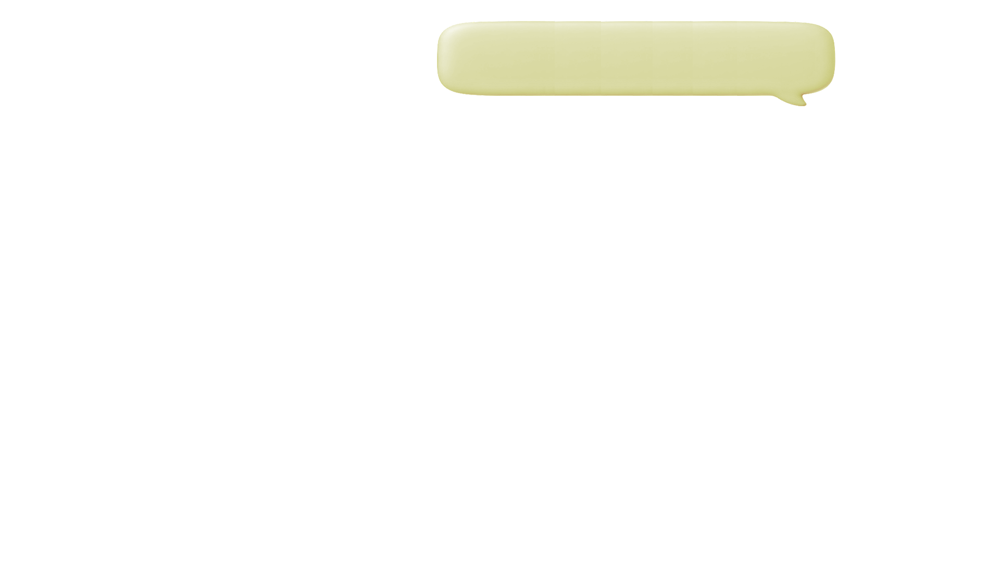
מדדנו בעזרת הכלי שכיילנו את נפח הרגולית ומצאנו כי נפחה 40 מ"ל, בואו נוסיף זאת לדוח הנתונים.

הנפח של שלוש דגימות הסלע האלה זהה, אך נראה כי כמות החומר שבדגימת סלע הבזלת גדולה יותר.
לא בהכרח, גל.
מדענים לא קובעים כמות חומר
על סמך מראה עיניים, אלא
על פי מידות מדויקות.

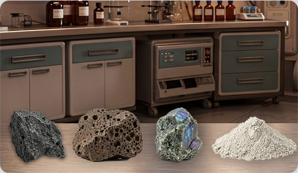
שאלה 8:
האם שירה צודקת? בהנחה שנפח הדגימות זהה, האם אפשר להסיק שיש להן גם אותה מסה (כמות חומר זהה)?
סמנו את התשובה הנכונה: